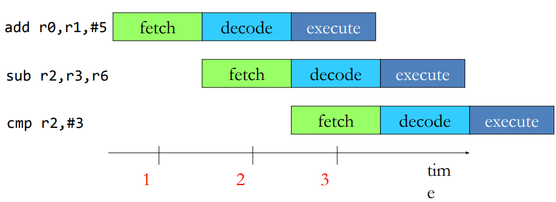

Processor and Memory
- Chapter 3 (3.5 - 3.6)
- Chapter 4 (4.4, 4.7)
Processor Architecture
- Organization of a processor core with different components and interconnection between them
- Two main architecture types based on memory organization
- Von Neumann: Shared instruction and data memory
- Typically used in general purpose computers
- Harvard: Separate memories for instruction and data
- Used mostly in embedded computers
Main processor functions
- Fetch
- Get instruction from (instruction) memory
- Decode
- What operation needs to be performed
- Where the operands are
- Execute
- Read operands
- Perform required operation
- Store result
Single cycle processor design
- All functions (fetch, decode, execute …) are performed in one cycle
- Cycles needs to be long enough to cover all functions
Analyzing single cycle design
- Inefficient use of hardware resources
- Only one stage is active at any time
Pipelined processor design
- Breaks instruction execution in different phases
- Example phases: fetch, decode, execute
- Executes only a phase (not whole instruction) in one cycle
- Each phase does less work → Shorter clock cycle (higher frequency)
- Key idea: Overlap execution of different phase of multiple instructions
- Overlapping improves hardware utilization and performance

Processor Performance Analysis
Performance: single cycle vs pipeline
- Execution time = Instruction count * CPI * Cycle time
- Instruction count is same in both designs
- CPI is also same (1) in both designs
- Overlapped execution leads to CPI of close to 1 in pipelined design (Slightly less in the beginning and at the end of execution)
- Cycle time in pipelined design is 1/3 of single cycle design
Pipeline design provides 3x performance (ideally) due to combination of overlapped execution and smaller cycle time
What limits pipeline performance?
- Dependencies may cause empty stages (stalls) in pipeline
- Data dependencies: an instructions reads the result of a previous instruction
- Control dependencies: instruction execution depends on the outcome of a branch instruction
- Properties of applications, not of pipeline
- A hazard is a situation when a dependency leads to incorrect
execution, if not handled properly.
- Hazards are pipeline properties
- Pipeline needs to be paused to avoid hazards, resulting in idle pipeline stages and lower CPI and performance
Data dependencies
- An instructions reads the result of a previous instruction
Data dependence hazards in pipeline
- A dependence between two instruction can cause a bubble
Control dependence hazards in pipeline
- Pipeline needs to be flushed on wrong execution path detection (e.g. if-else)
- Fetch starts from new PC provided by the branch instruction
- Loss of two cycles, called branch penalty
Avoiding control hazards
- Branch delay slots: n instructions after the branch are always
executed, regardless of branch outcome (2 instructions in our example)
- Advantage: No hazard detection required, no flushing
- Disadvantages:
- Difficult to find instruction that need to execute irrespective of branch outcome. Deeper pipelines might require up to 15 such instructions
- Needs to insert NOPs otherwise which is an intentional bubble
- Exposes the pipeline design to programmer/compiler ü°™ results in microarchitecture dependent code, not a good idea! Also leads to bugs
- Branch Prediction
- Predict the direction of branches for fetching next instructions. Need to flush only if the prediction was wrong.
Performance boosting techniques
- Out-of-order execution
- Reorder instructions to minimize stalls
- Superscalar processors
- Fetch, decode and execute multiple instructions per cycle
- Multithreaded processors
- Execute multiple instructions streams in parallel
- Other techniques: Caching, Prefetching, Vector execution,…
Memory Technologies
Memory requirements
- Programmers wish for memory to be
- Large
- Fast
- High bandwidth
- Unfortunately, wish not fulfillable by one kind of memory
- Issues of cost and technical feasibility
- Solution: Build a memory hierarchy to approximate the “ideal” large and fast memory through a combination of different types of memories
Example memory technologies
| Technology | Typical access time | $ per GB |
|---|---|---|
| SRAM | 1-10 ns | $1000 |
| DRAM* | ~100 ns | $10 |
| Flash SSD | ~100 μs | $1 |
| Magnetic disk | ~10 ms | $0.1 |
*Used as "main memory"
SRAM
- Static Random Access Memory (SRAM)
- Two cross-coupled inverters store a single bit
- Feedback path enables the stored value to persist in the cell
- 4 transistors for storage
- 2 transistors to access the cell
DRAM
- Dynamic Random Access Memory (DRAM)
- One capacitor stores a single bit
- Whether the capacitor is charge or discharged indicates storage of 1 or 0 value
- 1 capacitor for storage
- 1 access transistor
- Capacitor leaks through RC path
- DRAM cell loses charge over time
- Needs to be refreshed periodically
Memory bank organization and operation
DRAM read access
- Decode row address and enable “row select” signal
- Selected row drives bit lines. Entire row is read
- Amplify row data
- Decode column address and select subset of data. It is the output data
DRAM vs SRAM
| DRAM | SRAM |
|---|---|
| ▪ Slower access (capacitor) | ▪ Faster access (no capacitor) |
| ▪ Higher density (1T-1C cell) – Stores more bits per units area | ▪ Lower density (6T cell) – Stores less bits per unit area |
| ▪ Lower cost – Enables bigger memory | ▪ Higher cost – Not suitable for big memory |
| ▪ Require refresh – Needs power and area – Reduces performance | ▪ No refresh required |
Memory Hierarchy

Memory hierarchy idea
- Use a combination of memory kinds
- Smaller amounts of expensive but fast memory closer to the processor
- Larger amounts of cheaper but slower memory farther from the processor
- Not a new idea
Why is memory hierarchy effective?
- Temporal Locality:
- A recently accessed memory location (instruction or data) is likely to be accessed again in the near future
- Spatial Locality:
- Memory locations (instructions or data) close to a recently accessed location are likely to be accessed in the near future
- Why does locality exist in programs?
- Instruction reuse: loops, functions
- Data working sets: arrays, temporary variables, objects
Memory hierarchy in modern processors
- Small, fast cache next to a processor backed up by larger & slower cache(s) and main memory give the impression of a single, large, fast memory
- Take advantage of Temporal Locality:
- If access data from slower memory, move it to faster memory
- Take advantage of Spatial Locality:
- If need to move a word from slower to faster memory, move adjacent words at same time
Cache Terminology
- Block (or line): the unit of data stored in the cache
- Typically in the ranges of 32-128 bytes
- Hit: data is found in cache (this is what we want to happen)
- Memory access completes quickly
- Miss: data not found in cache
- Must continue to search in the next level of hierarchy (could be next level cache or main memory)
- After data is eventually located, it is copied to the cache
- Hit rate (hit ratio): fraction of accesses that are hits at a given level of hierarchy
- Hit time: time required to access a level of hierarchy
- Miss rate (miss ratio): fraction of accesses that are miss at a given level of hierarchy (= 1 - hit rate)
- Miss penalty: time required to fetch a block into some level from the next level down the hierarchy
- Cache size: refers only to the size of data portion, not tags and valid bits.
Direct Mapped Caches
Accessing cache
- Data are identified in (main) memory by their full 32-bit address
- Problem: how to map a 32-bit address to a much smaller memory, such as a cache?
How to know which of these memory locations is currently mapped to the selected cache line?
Practice Proble on Direct Mapped Caches
Given a 4 KB direct-mapped cache with 8-byte blocks and 32-bit addresses. Question: How many tag, index, and offset bits does the address decompose into? Answer:
- 8-byte block: requires a 3-bit offset
- 4 KB / 8 bytes per block = 512 blocks (Requires a 9-bit index)
- Tag: 32 – 9 – 3 = 20 bits